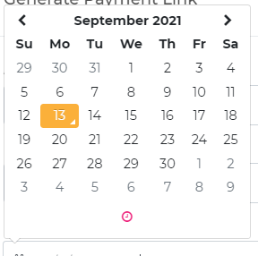

A GiyaPay Payment Link allows you to accept payments through multiple platforms (SMS, Chat, or Email) by sending the Payor a generated link.
Payment links can be used in most platforms (embedded in emails, sent as a text, or shared directly through social media messaging apps or chat). The Payor can open the link using any browser.
GiyaPay links can be created through your merchant dashboard.
Step 1: Click on the “Payment Links” menu.
Step 2: Click on the “Generate Payment Link” button.

Step 3: Fill in the details such as “Amount to Pay” and other fields.
*Note: The “Amount to Pay” field only allows numbers 0-9 and
one period character

Step 4: Set Expiry date and time
 *Note: When the “Expiry Date” field is clicked, a calendar
popup will appear andallows the Merchant user to set the day
and time of expiry

Note: To set the time, click on the pink clock icon on the lower part of the calendar pop up.
Step 5: Click on the Submit button.
Note: Review your inputted details before submitting.
GiyaPay QR codes are provided by us upon request during integration.
Payment Links work in three simple steps:
1. Generate a Payment Link
2. Share the Link
3. Accept Payments
There is no need for a website to avail of GiyaPay's Payment Link Feature. You can receive payments via chat, SMS, or email through the generated link!
All datetime is on GMT +08:00.
Unfortunately, we do not support the ability to customize the payment link URL yet; but you can use a third-party URL shortener to redirect to the payment link instead.
Yes, GiyaPay Payment Links expire depending on the date and time you set upon generating the link.
You cannot reuse an expired Payment Link. You can just generate a new payment link if the Payor missed to pay within the time you allotted.
Successful transactions will be updated in real-time on your Merchant dashboard. A successful payment will be indicated as "Paid."
Payors will be shown a "Successful Confirmation" page once the transaction is deemed successful.
Yes. Payors can access the link again and pay as long as the payment link status does not indicate the EXPIRED or PAID status.
Yes. When Payors open the link again, they will be able to access the payment page and proceed with the transaction.
Yes. The payment is counted, and you may check that the status of the payment in the Payment Link Dashboard will change into "Paid" status.